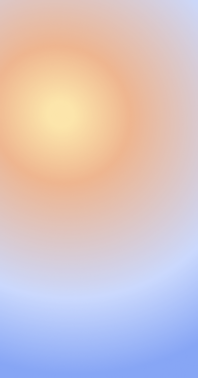

<!-- <svg width="390" height="745" viewBox="0 0 390 745" fill="none" xmlns="http://www.w3.org/2000/svg">

    <defs>
        <linearGradient id="Gradient2" x1="0" y1="0" x2="0" y2="1">
            <stop offset="0%" stop-color="red"/>
            <stop offset="50%" stop-color="blue" />
            <stop offset="100%" stop-color="green"/>
        </linearGradient>
        <filter id="f1" x="0" y="0">
            <feGaussianBlur in="SourceGraphic" stdDeviation="15" />
        </filter>
        <filter id="f2" x="-4" y="-4" width="398" height="753" filterUnits="userSpaceOnUse" color-interpolation-filters="sRGB">
            <feFlood flood-opacity="0.6" result="BackgroundImageFix"/>
            <feGaussianBlur in="BackgroundImageFix" stdDeviation="2"/>
            <feComposite in2="SourceAlpha" operator="in" result="effect1_backgroundBlur_88_2231"/>
            <feBlend mode="normal" in="SourceGraphic" in2="effect1_backgroundBlur_88_2231" result="shape"/>
        </filter>
    </defs>
    <g fill="url(#f2)">

        <rect width="390" height="745" fill="orange" fill-opacity="0.5"/>
    </g>
</svg> -->

<!--  -->


<mat-toolbar fxHide.lt-md color="primary">
    <span routerLink="/home" class="interactive">Singapore Travel Restrictions Advisor</span>
    <!-- <button mat-button routerLink="/page1">Look up country</button> -->
</mat-toolbar>
<!-- 
<button (click)="goBack()">go back</button> -->

<main>
    <router-outlet></router-outlet>
</main>

<footer>
    Application is built by company
</footer>